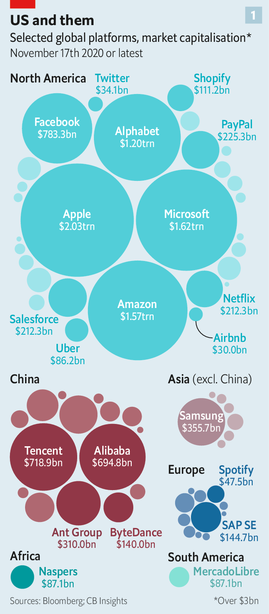
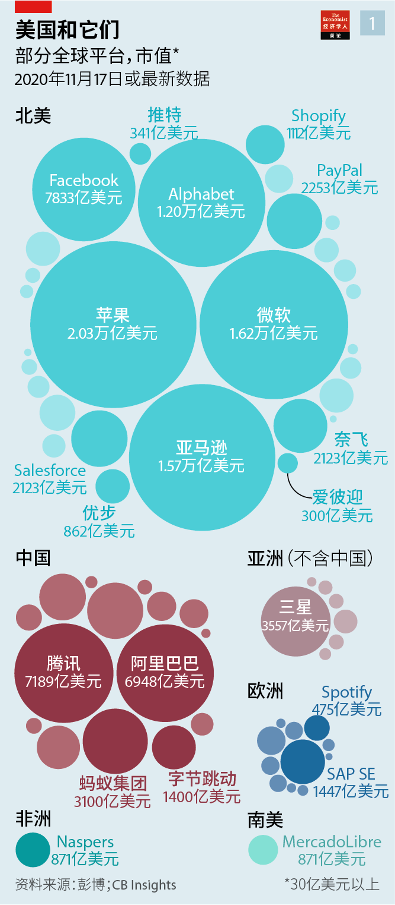
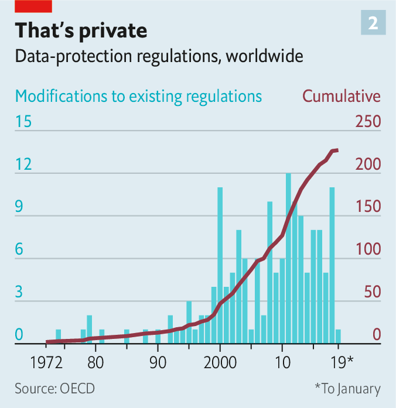
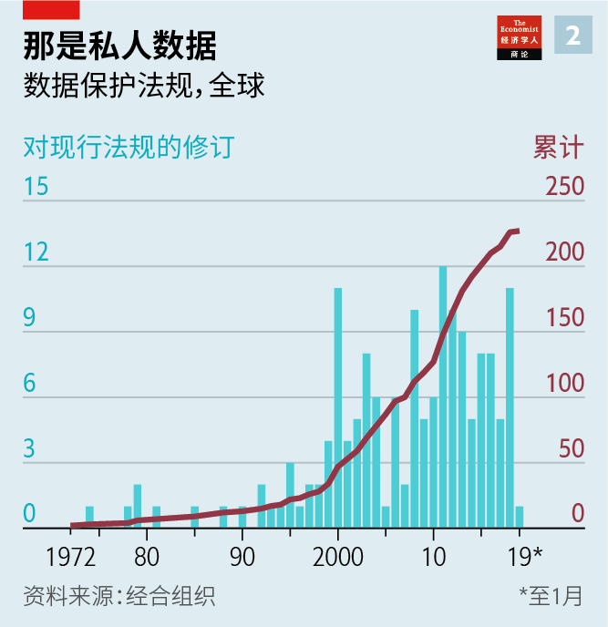
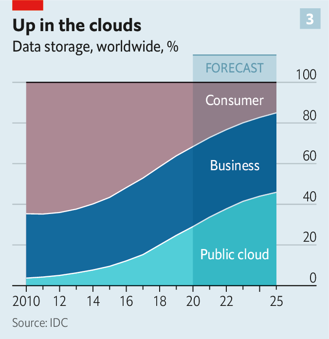
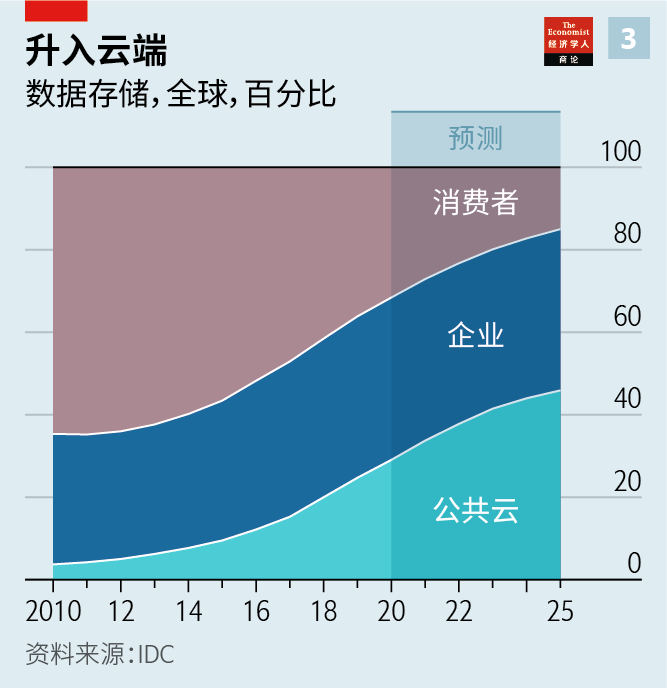

2020-12-06T15:42:20+00:00
Global technopolitics
全球科技政治
全球科技政治
The new grand bargain
新的大协议
新的大協議
Without teaming up, democracies will not be able to establish a robust alternative to China’s autocratic technosphere
没有合作，民主国家将无法建立能替代中国专制科技圈的强健系统【深度报道】
沒有合作，民主國家將無法建立能替代中國專制科技圈的強健系統【深度報道】
AMERICA HAS long dominated the world in information technology (IT). Its government, universities and enterprising spirit have provided it with decades of leadership in hardware and software. Its military drones, satellites and “system of systems” give its armed forces a powerful edge over those of any competitor. Silicon Valley is more visited by foreign dignitaries and finders-of-fact than any other business locale in the world. One of its tech giants is currently worth over $2trn; three more are worth over $1trn. The contribution technology makes to the buoyancy of its markets is without equal.
长久以来美国主导了IT领域。它的政府、大学和创业精神让它在数十年里引领硬件和软件行业。它的军用无人机、卫星和“系统的系统”（system of systems）给了它的军队超越任何竞争对手的强大优势。访问硅谷的外国政要和调查人员的数量比世界上任何其他商业区都多。它有一家科技巨头目前市值超过两万亿美元，另有三家超过一万亿美元。技术对其市场繁荣的贡献无与伦比。
長久以來美國主導了IT領域。它的政府、大學和創業精神讓它在數十年里引領硬件和軟件行業。它的軍用無人機、衛星和“系統的系統”（system of systems）給了它的軍隊超越任何競爭對手的強大優勢。訪問硅谷的外國政要和調查人員的數量比世界上任何其他商業區都多。它有一家科技巨頭目前市值超過兩萬億美元，另有三家超過一萬億美元。技術對其市場繁榮的貢獻無與倫比。
China, too, has digital resources in abundance, not least its huge population of 1.4bn, which means it will eventually boast an even deeper pool of data and experts to develop AI models. The country’s digital giants, from Alibaba to Tencent, have already become AI and cloud-computing powers in their own right. Its people live online to an extent that Americans—many of whom still have cheque books—do not. The country’s Great Firewall keeps undesirable digital content out. Within the wall, tech firms are allowed to fight it out as long as they are happy helpers of China’s surveillance state.
中国也拥有丰富的数字资源，尤其因为它有14亿人口，这意味着中国最终会有更多的数据和专家来开发AI模型。从阿里巴巴到腾讯，中国的数字巨头已经凭自身建立了强大的AI和云计算能力。中国人生活的网络化程度让美国人相形见绌——很多美国人还在用支票簿。中国的防火墙把它不欢迎的数字内容挡在门外。在防火墙内，只要科技公司乐意协助政府监控，它们就可以一争高下。
中國也擁有豐富的數字資源，尤其因為它有14億人口，這意味着中國最終會有更多的數據和專家來開發AI模型。從阿里巴巴到騰訊，中國的數字巨頭已經憑自身建立了強大的AI和雲計算能力。中國人生活的網絡化程度讓美國人相形見絀——很多美國人還在用支票簿。中國的防火牆把它不歡迎的數字內容擋在門外。在防火牆內，只要科技公司樂意協助政府監控，它們就可以一爭高下。
And China is on the move. It is investing billions in emerging technologies, from AI and chip fabrication to quantum computing and 5G, a new generation of mobile networks. It is hacking other countries’ computer systems and grabbing intellectual property where it can. It is packing the organisations that develop global technical rules, such as the International Telecommunication Union. And it is pulling other countries into its orbit with initiatives such as the “digital Silk Road”, helping them build out their digital infrastructure.
而且中国正在积极行动。它正在新兴技术领域投入巨资，包括AI、芯片制造、量子计算和新一代移动网络5G等。它在触角可及的地方入侵其他国家的计算机系统并攫取知识产权。它向国际电信联盟（International Telecommunication Union）等制定全球技术规则的组织安插人员。它还通过“数字丝绸之路”等倡议帮助其他国家建立数字基础设施，借此将它们拉入自己的势力范围。
而且中國正在積極行動。它正在新興技術領域投入巨資，包括AI、芯片製造、量子計算和新一代移動網絡5G等。它在觸角可及的地方入侵其他國家的計算機系統並攫取知識產權。它向國際電信聯盟（International Telecommunication Union）等制定全球技術規則的組織安插人員。它還通過“數字絲綢之路”等倡議幫助其他國家建立數字基礎設施，藉此將它們拉入自己的勢力範圍。
President Donald Trump saw, correctly, that this made China a serious challenger to America’s digital supremacy. His humbling of Huawei, a Chinese telecoms-equipment maker, has begun a decoupling of Chinese and American IT infrastructures and of the supply chains between China and America that will continue.
特朗普正确地看到这让中国对美国的数字霸权地位构成了严重挑战。他对中国电信设备制造商华为的打压已经开始让中美的IT基础设施以及两国间的供应链脱钩，这种脱钩还将继续下去。
特朗普正確地看到這讓中國對美國的數字霸權地位構成了嚴重挑戰。他對中國電信設備製造商華為的打壓已經開始讓中美的IT基礎設施以及兩國間的供應鏈脫鉤，這種脫鉤還將繼續下去。
Many device-makers have already moved part of their production out of China and some will end up with two separate supply chains. Apple’s contract manufacturers, for instance, are setting up plants in India. TSMC, a Taiwanese chip firm, announced in May that it will build a facility in Arizona. Feeling its dependence on American semiconductor technology, China is doubling down on efforts to build its own. In software and other areas, too, bifurcation has begun—and not just because of bans against Chinese apps.
许多设备制造商已经将部分生产线迁出中国，有些制造商最终将拥有两条独立的供应链。例如，苹果公司的代工厂就正在印度建厂。台湾芯片公司台积电在5月宣布将在亚利桑那州建厂。中国真切感受到了自己对美国半导体技术的依赖，正在加倍努力打造自己的半导体产业。在软件等领域，分叉也已开始，而这不仅仅是因为中国的应用被禁。
許多設備製造商已經將部分生產線遷出中國，有些製造商最終將擁有兩條獨立的供應鏈。例如，蘋果公司的代工廠就正在印度建廠。台灣芯片公司台積電在5月宣布將在亞利桑那州建廠。中國真切感受到了自己對美國半導體技術的依賴，正在加倍努力打造自己的半導體產業。在軟件等領域，分叉也已開始，而這不僅僅是因為中國的應用被禁。
What Mr Trump was unable or unwilling to understand, though, was that China and America are not the only economies that matter in this contest, and that fact provides America with a potentially decisive advantage. India, the European Union, Japan and others all play crucial roles in the world’s IT system—as do tech giants such as Alphabet, Apple and Microsoft.
但特朗普无法或不愿理解的是，中国和美国并不是这场竞赛中唯一重要的两个经济体，而这一事实为美国提供了潜在的决定性优势。印度、欧盟、日本以及其他国家和地区都在全球IT体系中发挥着至关重要的作用，Alphabet、苹果和微软等科技巨头也一样。
但特朗普無法或不願理解的是，中國和美國並不是這場競賽中唯一重要的兩個經濟體，而這一事實為美國提供了潛在的決定性優勢。印度、歐盟、日本以及其他國家和地區都在全球IT體系中發揮着至關重要的作用，Alphabet、蘋果和微軟等科技巨頭也一樣。
All these entities, whether national or corporate, are at odds with the American government and often with each other over something or other in the IT world, whether it be visas, privacy rights or competition complaints. But they would also all prefer a world in which international agreements, practices and expectations for IT embody the values and interests they share with America, rather than those of China. And if democratic countries cannot agree on common rules in the digital realm, China could end up setting the rules for large swathes of the world. The result would be a technosphere engineered for the comfort and support of autocracies.
所有这些实体——无论是国家还是企业——都在IT领域与美国政府存在这样或那样的矛盾，无论是签证、隐私权，还是竞争申诉等。它们彼此之间往往也有这类矛盾。但它们也都更希望IT领域的国际协议、实践和预期能体现它们与美国共有的价值观和利益，而不是中国那一套。而且，如果民主国家不能就数字领域的共同规则达成共识，那么最终可能就会由中国来为世界大片地区制定规则。其结果是整个科技圈的运作会迎合和支撑专制政权。
所有這些實體——無論是國家還是企業——都在IT領域與美國政府存在這樣或那樣的矛盾，無論是簽證、隱私權，還是競爭申訴等。它們彼此之間往往也有這類矛盾。但它們也都更希望IT領域的國際協議、實踐和預期能體現它們與美國共有的價值觀和利益，而不是中國那一套。而且，如果民主國家不能就數字領域的共同規則達成共識，那麼最終可能就會由中國來為世界大片地區制定規則。其結果是整個科技圈的運作會迎合和支撐專制政權。
A partial catalogue of the past few months’ disagreements shows the fractiousness that stops the free world coming together on this—and how many opportunities for dealmaking there would be if it decided it should. America’s commerce department told foreign firms they could sell no more chips made using American technology to Huawei; its justice department filed an antitrust lawsuit against Google. America also pulled out of talks at the Organisation for Economic Co-operation and Development (OECD), a club of mostly rich countries, about how to tax the tech giants. India blocked dozens of Chinese apps, including TikTok, a popular video-sharing service, which the American government also wants to ban. The European Court of Justice (ECJ) struck down the “Privacy Shield” agreement between America and the European Union (EU), thus throwing the legal basis on which personal data flows across the Atlantic into doubt.
过去几个月里的部分分歧显示，这些实体之间容易产生纷争，阻碍了自由世界在这方面团结一致，也显示出它们如果决意合作，就能有很多机会达成一致。美国商务部告知外国公司不得再向华为出售使用美国技术制造的芯片。美国司法部对谷歌提起了反垄断诉讼。美国还退出了主要由富裕国家组成的经合组织（OECD）就如何对科技巨头征税所开展的谈判。印度封锁了几十个中国的应用，其中包括美国政府也希望禁用的流行视频共享服务TikTok。欧洲法院否决了美国与欧盟之间的《隐私保护盾》（Privacy Shield）协议，让跨大西洋传输个人数据的法律依据受到质疑。
過去幾個月里的部分分歧顯示，這些實體之間容易產生紛爭，阻礙了自由世界在這方面團結一致，也顯示出它們如果決意合作，就能有很多機會達成一致。美國商務部告知外國公司不得再向華為出售使用美國技術製造的芯片。美國司法部對谷歌提起了反壟斷訴訟。美國還退出了主要由富裕國家組成的經合組織（OECD）就如何對科技巨頭徵稅所開展的談判。印度封鎖了幾十個中國的應用，其中包括美國政府也希望禁用的流行視頻共享服務TikTok。歐洲法院否決了美國與歐盟之間的《隱私保護盾》（Privacy Shield）協議，讓跨大西洋傳輸個人數據的法律依據受到質疑。
Europe has been trying for some time to carve out its own space in the digital realm as a protector of the citizenry—a noble goal made easier by the fact that the companies from which its citizens are being protected are mostly based the other side of the ocean. This has heightened tensions between Brussels, Washington and Silicon Valley. The ECJ’s ruling on the Privacy Shield is one example. The European Commission is drafting legislation that would weaken the power of America’s tech giants. Its proposed Digital Services Act would outlaw some of the firms’ business practices, such as bundling their services to take over new markets or displaying them more prominently than competing ones.
欧洲在数字产业中努力开辟自己作为公民保护者的一席之地已有一段时日。它为保护其公民而防范的公司总部大多在大西洋彼岸，减轻了实现这一崇高的目标的难度。这让布鲁塞尔、华盛顿和硅谷之间关系紧张。欧洲法院对《隐私保护盾》的裁决就是一个例子。欧盟委员会正在起草将削弱美国科技巨头影响力的法律。它拟议的《数字服务法案》（Digital Services Act）将禁止科技公司的某些商业行为，例如捆绑自己的服务以占领新市场，或者把自己的服务摆在比竞争对手更显眼的位置。
歐洲在數字產業中努力開闢自己作為公民保護者的一席之地已有一段時日。它為保護其公民而防範的公司總部大多在大西洋彼岸，減輕了實現這一崇高的目標的難度。這讓布魯塞爾、華盛頓和硅谷之間關係緊張。歐洲法院對《隱私保護盾》的裁決就是一個例子。歐盟委員會正在起草將削弱美國科技巨頭影響力的法律。它擬議的《數字服務法案》（Digital Services Act）將禁止科技公司的某些商業行為，例如捆綁自己的服務以佔領新市場，或者把自己的服務擺在比競爭對手更顯眼的位置。
We will rock you
我们会震撼你
我們會震撼你
Some of the EU’s member states have also begun defending their right to rule their own digital roost, something now called “digital sovereignty”. There is talk of creating a European cloud within the American one. GAIA-X is a step down that road—a federation of clouds, launched by Germany and France in June, whose members agree to certain rules, such as allowing customers to choose where their data are stored and move freely to providers’ competitors if they wish. There is more to come: a “data strategy” on the table in Brussels would, if fully implemented, create “data spaces” ruled by European law and give people more rights on how their data are used.
一些欧盟成员国也已经开始捍卫对自己的数字领地的权利——现在叫作“数字主权”。人们正在讨论在美国的云里建立欧洲云。GAIA-X项目就是为此创建的，这是由德国和法国于6月发起的云联盟，其成员就一些规则达成了一致，比如允许用户选择在哪里存储数据，或者按自己的意愿把数据自由转移到供应商的竞争对手那里。未来还会有更多动作：布鲁塞尔正在讨论的“数据战略”如果得到充分实施，将创建受欧洲法律管辖的“数据空间”，赋予人们更多决定自己的数据如何被使用的权力。
一些歐盟成員國也已經開始捍衛對自己的數字領地的權利——現在叫作“數字主權”。人們正在討論在美國的雲里建立歐洲雲。GAIA-X項目就是為此創建的，這是由德國和法國於6月發起的雲聯盟，其成員就一些規則達成了一致，比如允許用戶選擇在哪裡存儲數據，或者按自己的意願把數據自由轉移到供應商的競爭對手那裡。未來還會有更多動作：布魯塞爾正在討論的“數據戰略”如果得到充分實施，將創建受歐洲法律管轄的“數據空間”，賦予人們更多決定自己的數據如何被使用的權力。
These disputes offer ample space for mutually beneficial trade-offs. If America and its allies can reach good enough accommodations on the most contentious issues—notably privacy and competition—and find ways to live with the smaller contradictions and conflicts which remain, they can become a force to be reckoned with—one that others will need little encouragement to join. An insular America can remain a technology superpower. A connected America cemented into the rest of the world by means of a grand technopolitical bargain could be the hub of something truly unsurpassable.
这些纠纷提供了大量空间来达成互惠的折衷方案。如果美国及其盟国能够在最有争议的问题（尤其是隐私和竞争）上求得大同，并找到留存小异的方法，那它们就是一支不可小觑的力量，其他国家无需鼓励也会想加入它们。一个封闭的美国依然会是科技超级大国。而一个借助一项科技政治大协议与世界其他地区牢牢粘固在一起的美国却可能主导一个真正不可超越的系统。
這些糾紛提供了大量空間來達成互惠的折衷方案。如果美國及其盟國能夠在最有爭議的問題（尤其是隱私和競爭）上求得大同，並找到留存小異的方法，那它們就是一支不可小覷的力量，其他國家無需鼓勵也會想加入它們。一個封閉的美國依然會是科技超級大國。而一個藉助一項科技政治大協議與世界其他地區牢牢粘固在一起的美國卻可能主導一個真正不可超越的系統。
There is a range of ideas about how to do this. In a recent report for the Council on Foreign Relations, a think-tank, Robert Knake imagines such a grand bargain taking the form of a “digital trade zone”, complete with a treaty organisation. America would “weaponise its digital trade relationships” in order to promote such things as cyber-security, privacy protection and democratic values on the internet. Only countries that comply with the organisation’s rules on such matters would be able to become members and only members would be allowed fully to trade with each other digitally. Violations would be dealt with by imposing sanctions and tariffs. “If the digital trade zone grows strong enough, China might see more benefit to co-operative engagement than to continued disruptive behaviour,” writes Mr Knake.
关于如何做到这一点有很多想法。在最近为智库对外关系委员会（Council on Foreign Relations）撰写的一份报告中，罗伯特·科纳克（Robert Knake）设想的大协议形式是“数字贸易区”加上一个公约组织。美国将“把其数字贸易关系作为武器”，以求在互联网上加强网络安全、隐私保护和民主价值观。只有遵守公约组织在这些问题上的规则的国家才能成为成员国，只有成员国之间才能进行全面的数字贸易。违规者将被制裁和加征关税。“如果数字贸易区变得足够强大，中国可能会看到合作参与要比持续破坏好处更多。”科纳克写道。
關於如何做到這一點有很多想法。在最近為智庫對外關係委員會（Council on Foreign Relations）撰寫的一份報告中，羅伯特·科納克（Robert Knake）設想的大協議形式是“數字貿易區”加上一個公約組織。美國將“把其數字貿易關係作為武器”，以求在互聯網上加強網絡安全、隱私保護和民主價值觀。只有遵守公約組織在這些問題上的規則的國家才能成為成員國，只有成員國之間才能進行全面的數字貿易。違規者將被制裁和加征關稅。“如果數字貿易區變得足夠強大，中國可能會看到合作參與要比持續破壞好處更多。”科納克寫道。
Others prefer to imagine something less formal, rules-based and punitive. In October three other think-tanks—the Centre for a New American Security (CNAS), MERICS of Germany and the Asia-Pacific Initiative of Japan—outlined a less exclusive construction. They propose that democratic countries form a “technology alliance” not subject to a formal treaty. It would be like the G7, which consists of America, Britain, Canada, France, Germany, Italy and Japan, and could one day, perhaps, include India and other countries from the Global South. It would hold regular meetings, as the IMF and World Bank do, and issue consensus opinions, and it would invite other stakeholders—from NGOs to tech firms—to pitch in.
其他人则更倾向于设想一些不那么正式、较少基于规则和惩罚的形式。10月，另外三个智库——新美国安全中心（CNAS）、德国的墨卡托中国研究中心（MERICS）和日本的亚太倡议（Asia-Pacific Initiative）——概述了一种没那么排他的架构。它们建议民主国家组成一个不受制于正式条约的“技术联盟”。它就像是由美国、英国、加拿大、法国、德国、意大利和日本组成的七国集团，可能有一天会纳入印度和其他发展中国家。它将像IMF和世界银行那样定期召开会议，发表共识，并邀请非政府组织和科技公司等其他利益相关者参与进来。
其他人則更傾向於設想一些不那麼正式、較少基於規則和懲罰的形式。10月，另外三個智庫——新美國安全中心（CNAS）、德國的墨卡托中國研究中心（MERICS）和日本的亞太倡議（Asia-Pacific Initiative）——概述了一種沒那麼排他的架構。它們建議民主國家組成一個不受制於正式條約的“技術聯盟”。它就像是由美國、英國、加拿大、法國、德國、意大利和日本組成的七國集團，可能有一天會納入印度和其他發展中國家。它將像IMF和世界銀行那樣定期召開會議，發表共識，並邀請非政府組織和科技公司等其他利益相關者參與進來。
Let us cling together
让我们紧相连
讓我們緊相連
Until last month, such ideas seemed premature. But with Joe Biden soon in the White House, they have become more realistic: IT will be high on the agenda of the “summit of democracies” he has promised to convene. Closer co-ordination and some new institutions to back it up are also more needed, and not just because of the Chinese threat. The coronavirus, by pushing much of human activity into the cloud, has emphasised the importance of the digital realm and its governance. Left alone, the world of technology will continue to disintegrate into a splinternet in which digital protectionism is widespread—much as the global financial system fell apart before the second world war.
在11月之前，这类想法似乎还不成熟。但随着拜登不久将入主白宫，它们已变得更现实可行：在他承诺召集的“民主国家峰会”中，IT会是一个重要议题。促成更紧密的协调和支撑这种协调行动的新机构如今也更显迫切，这不仅仅是因为中国带来的威胁。疫情把很多人类活动推上云端，凸显了数字领域及其治理的重要性。如果任其发展，科技世界将继续分裂成数字保护主义泛滥的“分裂网”，与二战前全球金融体系的瓦解颇为相似。
在11月之前，這類想法似乎還不成熟。但隨着拜登不久將入主白宮，它們已變得更現實可行：在他承諾召集的“民主國家峰會”中，IT會是一個重要議題。促成更緊密的協調和支撐這種協調行動的新機構如今也更顯迫切，這不僅僅是因為中國帶來的威脅。疫情把很多人類活動推上雲端，凸顯了數字領域及其治理的重要性。如果任其發展，科技世界將繼續分裂成數字保護主義泛濫的“分裂網”，與二戰前全球金融體系的瓦解頗為相似。
To make sense of all this, it helps to see the political world as one in which technology is beginning to look ever more like geography. The geopolitical way of looking at the world, which was born in the 19th century and revolutionised strategic thinking in the 20th, was based on the idea that the geographical aspects of the physical world could be crucially important to the relations between states. Mountains that blocked transit and plains that permitted it; oilfields and coalfields; pinch-points where maritime traffic could be constrained. Where a state’s territory stood in respect to such geographical facts of life told it what it should fear and what it might aspire to, whose interests conflicted with its own and whose might align with them. In other words, geography was destiny.
要理解这一切，在观察政治世界时，可以认为科技因素越来越像地理因素。从地缘政治的角度看待世界始于19世纪，并在20世纪彻底改变了战略思维。它的思想基础是现实世界的地理特征可能对国家间的关系至关重要。阻挡交通的山脉和通行无阻的平原、油田和煤矿、能够限制海上交通的咽喉要道......一国领土的这些实际地理因素决定了它该害怕什么，可以追求什么，哪国利益与本国相冲突，哪国可能与其一致。换言之，地理即命运。
要理解這一切，在觀察政治世界時，可以認為科技因素越來越像地理因素。從地緣政治的角度看待世界始於19世紀，並在20世紀徹底改變了戰略思維。它的思想基礎是現實世界的地理特徵可能對國家間的關係至關重要。阻擋交通的山脈和通行無阻的平原、油田和煤礦、能夠限制海上交通的咽喉要道......一國領土的這些實際地理因素決定了它該害怕什麼，可以追求什麼，哪國利益與本國相衝突，哪國可能與其一致。換言之，地理即命運。
The units of analysis for today’s nascent technopolitics are platforms: the technologies on which other technologies are built—and alongside them, increasingly, businesses, governments and ways of life. The platform of all platforms is the internet. Some of the things which stand upon it are huge and widely known, such as Facebook, others small and obscure, such as Kubernetes, a sort of software used in cloud computing. Like geographical territories, these platforms have their own politics. They have their own populations, mostly users, coders and other firms. They have their own laws, which lay out who can change code and access data. They have a position with respect to other platforms which underpin, compete with or build on them, just as territories have defined relationships with their neighbours.
分析当今新生的科技政治的单位是平台，即支撑其他技术的技术，以及与之关联越来越紧密的企业、政府和生活方式。所有平台的平台是互联网。在互联网上，有的平台规模庞大且广为人知，比如Facebook，也有的小而不知名，如一种用于云计算的软件Kubernetes。像地理上的领土一样，这些平台也有自己的政治。它们有自己的人口，主要是用户、程序员和其他公司。它们有自己的法律，规定了谁可以更改代码和访问数据。它们对其他平台秉持某种位置立场——那些平台或者为自己提供了支撑，或者与自己竞争，或者建基于自己之上——就像领土与其邻国的关系界定那样。
分析當今新生的科技政治的單位是平台，即支撐其他技術的技術，以及與之關聯越來越緊密的企業、政府和生活方式。所有平台的平台是互聯網。在互聯網上，有的平台規模龐大且廣為人知，比如Facebook，也有的小而不知名，如一種用於雲計算的軟件Kubernetes。像地理上的領土一樣，這些平台也有自己的政治。它們有自己的人口，主要是用戶、程序員和其他公司。它們有自己的法律，規定了誰可以更改代碼和訪問數據。它們對其他平台秉持某種位置立場——那些平台或者為自己提供了支撐，或者與自己競爭，或者建基於自己之上——就像領土與其鄰國的關係界定那樣。
And they have their own governance systems. Some are “open”. The most famous is Linux, an operating system created and maintained through co-operative efforts to which all are, in principle, free to contribute and from which all are welcome to benefit. Others are “closed”, as is the convention among many corporate-software makers, such as Oracle. Some are run like absolute monarchies, such as Apple under Steve Jobs, who was the final arbiter over the smallest details in his tech empire.
它们还有自己的治理体系。有些是“开源的”。其中最著名的是Linux，这个操作系统通过合作来创建及维护，原则上所有个人和机构都可以自由地修改该系统，也欢迎各方从中受益。其他平台则是“闭源的”——大量企业软件制造商的惯常操作，比如甲骨文。有些平台的运作像绝对的君主制一样，例如乔布斯领导下的苹果，在他的科技帝国中，最小的细节都要由他做最终裁决。
它們還有自己的治理體系。有些是“開源的”。其中最著名的是Linux，這個操作系統通過合作來創建及維護，原則上所有個人和機構都可以自由地修改該系統，也歡迎各方從中受益。其他平台則是“閉源的”——大量企業軟件製造商的慣常操作，比如甲骨文。有些平台的運作像絕對的君主制一樣，例如喬布斯領導下的蘋果，在他的科技帝國中，最小的細節都要由他做最終裁決。
Don’t stop me now
现在别拦我
現在別攔我
Their dominant positions in this world of platforms give companies like Facebook and Google powers approaching or surpassing those of many countries. Yet countries can—as their economies become more digitised—be increasingly understood as platforms, too: national operating systems of sorts. Natural resources still count, but digital resources are gaining ever more relevance: skilled and well-trained tech workers, access to scads of data, computing power, internet bandwidth, industrial policy and venture capital. And as with technology platforms, a country’s competitiveness will, to a large extent, depend on how it manages and multiplies these resources.
在这个平台世界中的主导地位让Facebook和谷歌等公司“势可敌国”。但是，随着各个经济体的数字化程度不断提高，国家也日益可被看作平台——某种程度上的国家操作系统。自然资源仍然很重要，但是数字资源变得越来越重要，包括训练有素的熟练科技工人、海量数据的访问权、计算能力、互联网带宽、产业政策和风险投资。和科技平台一样，一国的竞争力在很大程度上将取决于它如何管理和扩大这些资源。
在這個平台世界中的主導地位讓Facebook和谷歌等公司“勢可敵國”。但是，隨着各個經濟體的數字化程度不斷提高，國家也日益可被看作平台——某種程度上的國家操作系統。自然資源仍然很重要，但是數字資源變得越來越重要，包括訓練有素的熟練科技工人、海量數據的訪問權、計算能力、互聯網帶寬、產業政策和風險投資。和科技平台一樣，一國的競爭力在很大程度上將取決於它如何管理和擴大這些資源。
America is a platform like Microsoft’s Windows and Android, Google’s mobile operating system. These mix aspects of open and closed systems, allowing others to develop applications for their platform, but also closely control it. America combines monopolies and a strongish state with lots of competition. Mainly thanks to this profitable amalgam, the country has given rise to most of the world’s leading tech firms. China is more like Apple and Oracle, which combine being closed with lots of internal competition. The European Union is best compared to an open-source project such as Linux, which needs complex rules to work. India, Japan, Britain, Taiwan and South Korea all run differently and have technology bases to match.
美国就像是微软的Windows和谷歌的移动操作系统安卓那样的平台，开源和闭源系统的特征兼而有之，既允许其他人为其平台开发应用，同时也对平台严加控制。美国将垄断和较强势的政府与大量竞争相结合。美国主要得益于这种有利的混合形式，催生了大多数全球领先的科技公司。中国大陆更像是苹果和甲骨文那样的平台，封闭而内部竞争激烈。欧盟与Linux这类开源系统最相近，它的运作需要依赖复杂的规则。印度、日本、英国、台湾和韩国的运行方式各不相同，也都有相匹配的技术基础。
美國就像是微軟的Windows和谷歌的移動操作系統安卓那樣的平台，開源和閉源系統的特徵兼而有之，既允許其他人為其平台開發應用，同時也對平台嚴加控制。美國將壟斷和較強勢的政府與大量競爭相結合。美國主要得益於這種有利的混合形式，催生了大多數全球領先的科技公司。中國大陸更像是蘋果和甲骨文那樣的平台，封閉而內部競爭激烈。歐盟與Linux這類開源系統最相近，它的運作需要依賴複雜的規則。印度、日本、英國、台灣和韓國的運行方式各不相同，也都有相匹配的技術基礎。
The rise of cloud computing and AI—the first a truly global infrastructure, the second its most important application—has heightened the tensions between these platforms. More and more value is created by using oodles of computing power to extract AI models from digital information generated by people, machines and sensors. The models can then be turned into all sorts of services. Transport, health care, teaching, campaigning, warfare—these parts of society will not become “data-driven” as fast as many predict, but in time they will all be transformed. Whoever controls the digital flows involved can divert much of the rent they generate. Knowledge is power in the virtual world even more than in the real one—and it generates profit. Ian Hogarth, a British tech thinker, summarised the sudden sense of urgency when he wrote in a paper in 2018 that “AI policy will become the single most important area of government policy”.
真正的全球基础设施云计算及其最重要的应用AI的兴起加剧了这些国家平台之间的紧张关系。通过使用庞大计算能力从人、机器和传感器生成的数字信息中提取AI模型，越来越多价值正被创造出来。这些模型而后可以转变为各种各样的服务。运输、医疗、教学、竞选和战争——人类社会的这些方面将不会像许多人预测的那样迅速变成“数据驱动”，但假以时日它们全都将转型。谁能控制这些领域的数字流，谁就能分走它们产生的大部分经济租。“知识就是力量”在虚拟世界中的效应更甚于在真实世界，而且知识还可以产生利润。英国科技思想家伊恩·霍加斯（Ian Hogarth）在2018年的一篇论文中对突然浮现的紧迫感做了总结，认为“AI政策将成为政府政策中最重要的领域，没有之一”。
真正的全球基礎設施雲計算及其最重要的應用AI的興起加劇了這些國家平台之間的緊張關係。通過使用龐大計算能力從人、機器和傳感器生成的數字信息中提取AI模型，越來越多價值正被創造出來。這些模型而後可以轉變為各種各樣的服務。運輸、醫療、教學、競選和戰爭——人類社會的這些方面將不會像許多人預測的那樣迅速變成“數據驅動”，但假以時日它們全都將轉型。誰能控制這些領域的數字流，誰就能分走它們產生的大部分經濟租。“知識就是力量”在虛擬世界中的效應更甚於在真實世界，而且知識還可以產生利潤。英國科技思想家伊恩·霍加斯（Ian Hogarth）在2018年的一篇論文中對突然浮現的緊迫感做了總結，認為“AI政策將成為政府政策中最重要的領域，沒有之一”。
Many rich countries have drawn up ambitious industrial-policy plans for AI. Some have also instituted national data strategies which limit the data that can leave the country. A few have begun attacking other countries’ platforms by hacking their computer systems and spreading misinformation. In short, they are behaving increasingly like the companies producing the technology reshaping their world. “Everybody has become much more techno-nationalist,” says Justin Sherman of the Atlantic Council, a think-tank.
许多富裕国家已经草拟了雄心勃勃的AI产业政策计划。有些还制定了国家数据策略，以限制可能离开本国的数据。一些国家已经开始通过入侵其他国家的计算机系统并传播错误信息来攻击它们的平台。总之，这些国家的行为越来越像那些开发出技术来重塑世界的公司。“大家的科技民族主义情绪都大涨。”智库大西洋理事会（Atlantic Council）的贾斯汀·谢尔曼（Justin Sherman）说。
許多富裕國家已經草擬了雄心勃勃的AI產業政策計劃。有些還制定了國家數據策略，以限制可能離開本國的數據。一些國家已經開始通過入侵其他國家的計算機系統並傳播錯誤信息來攻擊它們的平台。總之，這些國家的行為越來越像那些開發出技術來重塑世界的公司。“大家的科技民族主義情緒都大漲。”智庫大西洋理事會（Atlantic Council）的賈斯汀·謝爾曼（Justin Sherman）說。
That the 21st-century internet would be a splinternet was, perhaps, inevitable. It is not just that nations act in their own interests; they also have different preferences and values, for instance regarding privacy. High digital borders behind which data get stuck, however, are not in the interests of most countries—though they may be in the interest of some governments. Russia wants to create a “sovereign internet” that can be cut from the rest of the online world at the flip of a switch (while retaining the capability to mess around in more open systems). Countries interested in using flows of data to improve their citizens’ lot, though, will see few advantages. In a splinternet world choice will be limited, costs will rise and innovation will slow. And all the while China, with the biggest silo and thus the greatest access to data, loses least.
也许21世纪的互联网演变成分裂网已是不可避免。这不仅仅是因为各国从自身利益出发各行其是，也因为它们在隐私等问题上有不同的偏好和价值观。但是，竖起高高的数字边境阻止数据的流动不符合大多数国家的利益，尽管这可能符合某些政府的利益。俄罗斯希望打造一个“主权互联网”，可以随时轻松隔断与全球互联网的连接（同时仍能在其他更开放的系统中捣乱）。而那些有意利用数据流来改善民生的国家几乎没有优势。在分裂网的世界中，选择会受限，成本会增加，创新会放缓。而与此同时，拥有最大的“筒仓”而可以获取最多数据的中国损失最小。
也許21世紀的互聯網演變成分裂網已是不可避免。這不僅僅是因為各國從自身利益出發各行其是，也因為它們在隱私等問題上有不同的偏好和價值觀。但是，豎起高高的數字邊境阻止數據的流動不符合大多數國家的利益，儘管這可能符合某些政府的利益。俄羅斯希望打造一個“主權互聯網”，可以隨時輕鬆隔斷與全球互聯網的連接（同時仍能在其他更開放的系統中搗亂）。而那些有意利用數據流來改善民生的國家幾乎沒有優勢。在分裂網的世界中，選擇會受限，成本會增加，創新會放緩。而與此同時，擁有最大的“筒倉”而可以獲取最多數據的中國損失最小。
You’re my best friend
你是我最好的朋友
你是我最好的朋友
It is against this background that a grand bargain needs to be struck. Its broad outline would be for America to get security guarantees and rule-making bodies in which its interests can be taken seriously. In return it would recognise European privacy and other regulatory concerns as well as demands that tech titans be properly taxed. Ideally, such a deal would also include India and other developing countries, which want to make sure that they do not risk becoming mere sources of raw data, while having to pay for the digital intelligence produced.
正是在这种背景下，需要达成一项大协议。它的大致内容是让美国获得安全保证，以及能够认真对待其利益的规则制定机构。作为回馈，它将认可欧洲的隐私和其他监管顾虑，以及对科技巨头恰当收税的要求。理想情况下，这样的协议还应包括印度和其他发展中国家，它们希望确保自己不会沦为纯粹的原始数据来源，同时还得为这些数据带来的数字智能付费。
正是在這種背景下，需要達成一項大協議。它的大致內容是讓美國獲得安全保證，以及能夠認真對待其利益的規則制定機構。作為回饋，它將認可歐洲的隱私和其他監管顧慮，以及對科技巨頭恰當收稅的要求。理想情況下，這樣的協議還應包括印度和其他發展中國家，它們希望確保自己不會淪為純粹的原始數據來源，同時還得為這些數據帶來的數字智能付費。
In terms of security, the parties to the bargain would ensure each other secure, diverse supply chains for digital infrastructure. To get there, the CNAS proposes, in effect, to partially mutualise them: among other things, members of a tech alliance should co-ordinate their efforts to restructure supply chains and might set up a semiconductor consortium with facilities around the world. Supporting open technologies and standards that create a diverse set of suppliers would help, too. An example is OpenRAN, a mobile network that allows carriers to mix and match components rather than having to buy from one vendor. A world with open infrastructure like this need not, in principle, just depend on a few suppliers, as is the case today with Huawei, Nokia or Ericsson.
在安全方面，协议各方将确保为彼此提供安全的、多样化的数字基础设施供应链。为此，新美国安全中心建议将供应链的一部分相互融合：这个科技联盟的成员应携手重组供应链，也许可以建立一个在世界各地都有设施的半导体联盟，诸如此类。支持开放技术和标准以创建多元化的供应商群体也有助益。OpenRAN就是这样一个例子，该移动网络让运营商可以混合搭配基础设施部件，而不必绑定一家供应商。在这样一个拥有开放性基础设施的世界里，原则上就不需要像今天这样依赖华为、诺基亚或爱立信等少数几家供应商了。
在安全方面，協議各方將確保為彼此提供安全的、多樣化的數字基礎設施供應鏈。為此，新美國安全中心建議將供應鏈的一部分相互融合：這個科技聯盟的成員應攜手重組供應鏈，也許可以建立一個在世界各地都有設施的半導體聯盟，諸如此類。支持開放技術和標準以創建多元化的供應商群體也有助益。OpenRAN就是這樣一個例子，該移動網絡讓運營商可以混合搭配基礎設施部件，而不必綁定一家供應商。在這樣一個擁有開放性基礎設施的世界裡，原則上就不需要像今天這樣依賴華為、諾基亞或愛立信等少數幾家供應商了。
To give in to Europe on other fronts in return for help in such matters would be costly to America, which has largely opposed attempts to regulate and tax its tech giants abroad. In terms of statecraft, that is an attractive part of the arrangement; to be willing to pay a cost shows that you place real value on what you are getting.
对美国而言，在其他方面对欧洲让步以换取在上述问题上的帮助代价高昂。美国很大程度上一直反对自己的科技巨头在国外被监管和课税。但从治国方略看，这会是大协议的一个吸引人之处，因为愿意付出代价会向世人表明你确实重视自己要换取的东西。
對美國而言，在其他方面對歐洲讓步以換取在上述問題上的幫助代價高昂。美國很大程度上一直反對自己的科技巨頭在國外被監管和課稅。但從治國方略看，這會是大協議的一個吸引人之處，因為願意付出代價會向世人表明你確實重視自己要換取的東西。
If an alliance of democracies is to deliver a China-proof technosphere, America will have to accept that the interdependence of the tech world on which the whole idea is based means that it cannot act unconstrained. Henry Farrell of Johns Hopkins University argues that America has so far simply “weaponised” this interdependence, using chokepoints where it has leverage to strangle enemies and put pressure on friends. But Europe’s resistance to banning Huawei’s gear and the ECJ’s decision show that even friends can balk. America needs to give if it is to receive.
如果民主国家联盟要建立一个“防华”科技圈，美国将不得不接受一件事：科技世界的相互依存——也就是整个构想的基础——意味着美国不能不受约束地行事。约翰·霍普金斯大学的亨利·法雷尔（Henry Farrell）认为，到目前为止，美国只是“武器化”了这种相互依存关系，利用它有影响力的咽喉点扼杀敌人并向盟友施压。但欧洲对禁用华为设备的抵制以及欧洲法院的裁决表明，即使盟友也可能踌躇不前。想要有所得，美国就需要有所付出。
如果民主國家聯盟要建立一個“防華”科技圈，美國將不得不接受一件事：科技世界的相互依存——也就是整個構想的基礎——意味着美國不能不受約束地行事。約翰·霍普金斯大學的亨利·法雷爾（Henry Farrell）認為，到目前為止，美國只是“武器化”了這種相互依存關係，利用它有影響力的咽喉點扼殺敵人並向盟友施壓。但歐洲對禁用華為設備的抵制以及歐洲法院的裁決表明，即使盟友也可能躊躇不前。想要有所得，美國就需要有所付出。
It might not have to give all that much. European views on regulating platforms more strictly because of their tendency to become quasi-natural monopolies are not exactly mainstream in Washington, DC, but nor are they completely alien to the political debate there. A recent congressional report about how to limit big tech’s power included many ideas already touted in Brussels, such as banning tech giants from favouring their own services and refusing to connect to competing ones. Positions on regulating speech online are not that far apart either. As in Europe, there is growing agreement in America that legislation is needed to push social-media firms to do more to rid their services of hate speech and the like.
美国可能并不需要付出太多。欧洲认为科技平台往往会近乎自然而然地形成垄断，因此需要更严格的监管，这种观点在华盛顿不是主流，但在那里的政治辩论中也不完全陌生。国会最近关于如何限制科技巨头影响力的报告就包括了布鲁塞尔已经在提倡的许多方案，例如禁止科技巨头偏向自家服务和拒绝连接竞争对手的服务。双方对监管网络言论所持立场也相差不远。和在欧洲一样，美国也有越来越多的人同意需要通过立法来推动社交媒体公司做出更多努力，在它们的平台上隔绝仇恨言论之类的内容。
美國可能並不需要付出太多。歐洲認為科技平台往往會近乎自然而然地形成壟斷，因此需要更嚴格的監管，這種觀點在華盛頓不是主流，但在那裡的政治辯論中也不完全陌生。國會最近關於如何限制科技巨頭影響力的報告就包括了布魯塞爾已經在提倡的許多方案，例如禁止科技巨頭偏向自家服務和拒絕連接競爭對手的服務。雙方對監管網絡言論所持立場也相差不遠。和在歐洲一樣，美國也有越來越多的人同意需要通過立法來推動社交媒體公司做出更多努力，在它們的平台上隔絕仇恨言論之類的內容。
A deal on taxing tech firms seems within reach, too. The Trump administration resisted efforts to compel them to pay taxes where they do business rather than in tax havens, regarding this as a grab for the profits of American companies. A Biden administration is likely to be more open to the argument that more of the taxes on digital firms should go to places where their customers live. Expect negotiations on the matter at the OECD to be revived—as they must be to keep countries from charging digital taxes unilaterally. Barring a compromise, France, Spain and Britain will start collecting such a levy early next year.
一项对科技公司征税的协议似乎也触手可及。特朗普政府拒绝强迫科技公司在业务所在地而非避税天堂缴税，视之为抢夺美国公司的利润。对于这类税收更多应流向公司客户所在地的观点，拜登政府很可能持更开放的态度。可以预期经合组织会恢复这方面的谈判——为避免各国单方面征收数字税也必须重启谈判。如果无法达成妥协，法国、西班牙和英国将于明年年初开始征收这类数字税。
一項對科技公司徵稅的協議似乎也觸手可及。特朗普政府拒絕強迫科技公司在業務所在地而非避稅天堂繳稅，視之為搶奪美國公司的利潤。對於這類稅收更多應流向公司客戶所在地的觀點，拜登政府很可能持更開放的態度。可以預期經合組織會恢復這方面的談判——為避免各國單方面徵收數字稅也必須重啟談判。如果無法達成妥協，法國、西班牙和英國將於明年年初開始徵收這類數字稅。
In parts of the world’s international bureaucracy the grand bargaining has already begun. When Japan presided over the G20, a club of developing and rich countries, last year, it succeeded in getting the group to launch the “Osaka Track”, an attempt to come up with rules to regulate global data flows. This summer also saw the launch of the Global Partnership in AI, which is meant to come up with rules for the responsible use of AI, and of the Inter-Parliamentary Alliance on China, which brings together lawmakers from 18 countries. These new groups join a few established ones, such as the OECD and the Internet Governance Forum, which have long pushed for common rules in the digital realm. NATO has started to do the same for AI and data-sharing among its members.
在一些国际组织机构中，对大协议的谈判已经开始。去年日本在主持G20（由一些发展中国家和富裕国家构成的组织）峰会时成功让该组织创设了“大阪框架”（Osaka Track），以求制定规范全球数据流的规则。今年夏天新创的组织包括AI全球合作组织（Global Partnership in AI），旨在就负责任地应用AI建立规则，以及汇集18个国家立法机构的对华政策跨国议会联盟（Inter-Parliamentary Alliance on China）。它们加入了经合组织和互联网治理论坛（Internet Governance Forum）等成熟机构的行列，这些成熟机构长期推动建立数字领域的通用规则。北约也已开始在其成员国之间寻求制定AI和数据共享规则。
在一些國際組織機構中，對大協議的談判已經開始。去年日本在主持G20（由一些發展中國家和富裕國家構成的組織）峰會時成功讓該組織創設了“大阪框架”（Osaka Track），以求制定規範全球數據流的規則。今年夏天新創的組織包括AI全球合作組織（Global Partnership in AI），旨在就負責任地應用AI建立規則，以及彙集18個國家立法機構的對華政策跨國議會聯盟（Inter-Parliamentary Alliance on China）。它們加入了經合組織和互聯網治理論壇（Internet Governance Forum）等成熟機構的行列，這些成熟機構長期推動建立數字領域的通用規則。北約也已開始在其成員國之間尋求制定AI和數據共享規則。
One of the key parameters in the bargaining will be how formal a framework the parties want. In some ways, formal is better: everyone knows where they stand. In others, formal is worse: agreement is harder. Take the example of trade, thoroughly formalised within the WTO. Trade agreements take years to negotiate, often only to be blocked by legislatures at the last minute. This is why a Biden administration will probably aim for a much looser form of co-operation, at least initially. An idea discussed in foreign-policy circles close to Mr Biden is that, instead of agreeing on certain policies that then have to be implemented nationally, governments should opt for a division of labour within certain red lines. If Europe wants to go ahead with rules to regulate big tech which do not amount to expropriation, America would not put up a fight—thus allowing the EU regulation to become the global standard of sorts, rather as it has done with the GDPR.
谈判中的关键因素之一是各方想要一个多正式的框架。在某些方面，正式一点更好，这样各方都明确自己的立场。在另一些情况下，正式会造成问题，因为这样更难达成协议。以WTO内完全正规化的贸易谈判为例。贸易协定的谈判耗时数年，结果往往在最后一刻卡在成员国的立法机构。因此拜登政府至少在初期很可能会寻求一种宽松得多的合作形式。一些与拜登关系密切的外交政策圈子讨论的一个想法是，政府不应就某些需要在国内实施的政策达成一致，而应该划清界限，明确分工。如果欧洲想继续执行监管科技巨头的法规，只要没到征用的地步，美国就不会发起争斗，而让欧盟法规像通用数据保护条例（GDPR）那样成为某种全球标准。
談判中的關鍵因素之一是各方想要一個多正式的框架。在某些方面，正式一點更好，這樣各方都明確自己的立場。在另一些情況下，正式會造成問題，因為這樣更難達成協議。以WTO內完全正規化的貿易談判為例。貿易協定的談判耗時數年，結果往往在最後一刻卡在成員國的立法機構。因此拜登政府至少在初期很可能會尋求一種寬鬆得多的合作形式。一些與拜登關係密切的外交政策圈子討論的一個想法是，政府不應就某些需要在國內實施的政策達成一致，而應該劃清界限，明確分工。如果歐洲想繼續執行監管科技巨頭的法規，只要沒到徵用的地步，美國就不會發起爭鬥，而讓歐盟法規像通用數據保護條例（GDPR）那樣成為某種全球標準。
The show must go on
合奏必须继续
合奏必須繼續
Compromises that provide something for everyone are not hard to spot. But reaching them will not be easy. After four years of President Trump, “the mistrust on the European side runs deep,” says Samm Sacks of CNAS. On the other side of the Atlantic, Congress will not want to make life more difficult for its intelligence agencies, for whom social media and online services have become a crucial source of information. In order for a grand bargain to be reached, all of that must be made more difficult. If the ECJ struck down the Privacy Shield, it was mostly because the court believed that America does not provide enough safeguards to protect European data from the eyes of its intelligence and law-enforcement agencies.
让各方都能有所得的妥协方案并不难找到。但要达成妥协并不容易。特朗普执政四年后，“欧洲的不信任感非常强烈，”新美国安全中心的萨姆·萨克斯（Samm Sacks）说。而在大西洋彼岸，美国国会不希望加大情报机构工作的难度。社交媒体和在线服务已成为这些机构重要的信息来源，而为达成大协议，这些信息搜集工作都必然会变得更难。欧洲法院否决《隐私保护盾》主要是因为它认为美国没有提供足够的保障来保护欧洲的数据免受美国情报和执法机构的监控。
讓各方都能有所得的妥協方案並不難找到。但要達成妥協並不容易。特朗普執政四年後，“歐洲的不信任感非常強烈，”新美國安全中心的薩姆·薩克斯（Samm Sacks）說。而在大西洋彼岸，美國國會不希望加大情報機構工作的難度。社交媒體和在線服務已成為這些機構重要的信息來源，而為達成大協議，這些信息搜集工作都必然會變得更難。歐洲法院否決《隱私保護盾》主要是因為它認為美國沒有提供足夠的保障來保護歐洲的數據免受美國情報和執法機構的監控。
Another big barrier on the way to a bargain will be the question of how much America’s tech titans need to be reined in. “To bring globe-spanning technology firms to heel, we need something new: a global alliance that puts democracy first,” argues Marietje Schaake, a former member of the European Parliament who now works for the Cyber Policy Centre at Stanford University, in a recent article. Many in California and elsewhere in America like the sound of this, but Congress will only go so far in restricting its tech giants and their business model, which is increasingly based on extracting value from data.
达成协议的另一大障碍是美国的科技巨头需要在多大程度上被约束。“要让业务遍布全球的科技公司顺从配合，我们需要新的尝试：一个将民主放在首位的全球联盟。”曾任欧洲议会议员、目前在斯坦福大学网络政策中心（Cyber Policy Centre）任职的玛丽切·沙克（Marietje Schaake）最近在一篇文章中指出。加州和美国其他地区的许多人都喜欢这种提法，但对于限制科技巨头及其越来越依赖从数据中提取价值的商业模式，国会能做的有限。
達成協議的另一大障礙是美國的科技巨頭需要在多大程度上被約束。“要讓業務遍布全球的科技公司順從配合，我們需要新的嘗試：一個將民主放在首位的全球聯盟。”曾任歐洲議會議員、目前在斯坦福大學網絡政策中心（Cyber Policy Centre）任職的瑪麗切·沙克（Marietje Schaake）最近在一篇文章中指出。加州和美國其他地區的許多人都喜歡這種提法，但對於限制科技巨頭及其越來越依賴從數據中提取價值的商業模式，國會能做的有限。
Even if a grand bargain can be reached, many small ones will need to be done as well. That is why, in the long run, the world needs more than bilateral deals and a loose form of co-operation, but something more robust and specialised. It may even have to be something like a World Data Organisation, as Ian Bremmer of the Eurasia Group has suggested (or at least a GADD, a General Agreement on Data and Digital Infrastructure, a bit like the General Agreement on Tariffs and Trade, as the WTO’s predecessor was called). Given the sorry state of the WTO, this may seem fanciful, but without such an organisation today’s global data flows may shrink to a trickle—much as protectionism limited trade in the days before the GATT and the WTO.
即使可以达成一个大协议，也还需要同时达成很多小协议。因此，长远来看，世界需要的不仅仅是双边协议和宽松的合作，而是某种更强健、更专门化的东西。甚至可能必须要有一个像欧亚集团（Eurasia Group）的伊恩·布雷默（Ian Bremmer）建议的“世界数据组织”之类的机构（或者至少也得有一个“数据和数字基础设施总协定”[GADD]这样有点像WTO的前身“关贸总协定”的东西）。考虑到WTO现在令人遗憾的状况，这似乎有点异想天开，但如果没有这样的组织，今天的全球数据洪流可能会萎缩成细流，正如在成立“关贸总协定”和WTO之前贸易保护主义限制了贸易发展那样。
即使可以達成一個大協議，也還需要同時達成很多小協議。因此，長遠來看，世界需要的不僅僅是雙邊協議和寬鬆的合作，而是某種更強健、更專門化的東西。甚至可能必須要有一個像歐亞集團（Eurasia Group）的伊恩·布雷默（Ian Bremmer）建議的“世界數據組織”之類的機構（或者至少也得有一個“數據和數字基礎設施總協定”[GADD]這樣有點像WTO的前身“關貿總協定”的東西）。考慮到WTO現在令人遺憾的狀況，這似乎有點異想天開，但如果沒有這樣的組織，今天的全球數據洪流可能會萎縮成細流，正如在成立“關貿總協定”和WTO之前貿易保護主義限制了貿易發展那樣。
Will it ever happen? Yes, if history is any guide. In July 1944 representatives of 44 countries met in Bretton Woods, New Hampshire, to hash out a new financial order, including the IMF and the World Bank. Granted, the pandemic is no world war. But, with luck, living through it may provide enough motivation to try again in the digital realm. ■
这真能实现吗？能，如果历史可以作为参照的话。1944年7月，来自44个国家的代表在新罕布什尔州的布雷顿森林开会，经充分讨论后建立了包括IMF和世界银行在内的新金融秩序。当然，疫情不是世界大战。但是，幸运的话，抗击疫情可能会带来足够的动力，在数字领域也试一回。
這真能實現嗎？能，如果歷史可以作為參照的話。1944年7月，來自44個國家的代表在新罕布什爾州的布雷頓森林開會，經充分討論後建立了包括IMF和世界銀行在內的新金融秩序。當然，疫情不是世界大戰。但是，幸運的話，抗擊疫情可能會帶來足夠的動力，在數字領域也試一回。